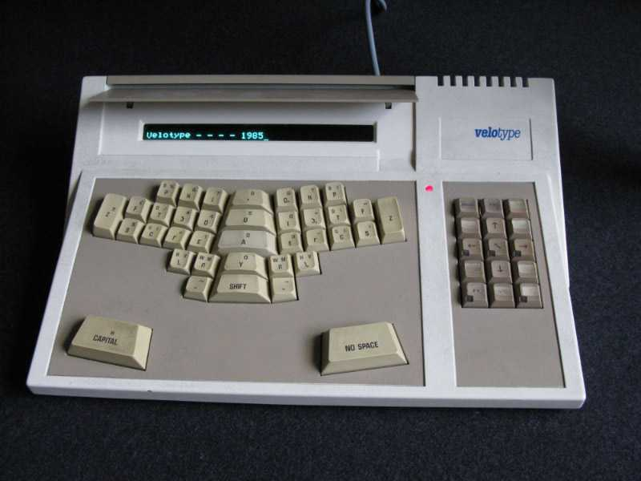
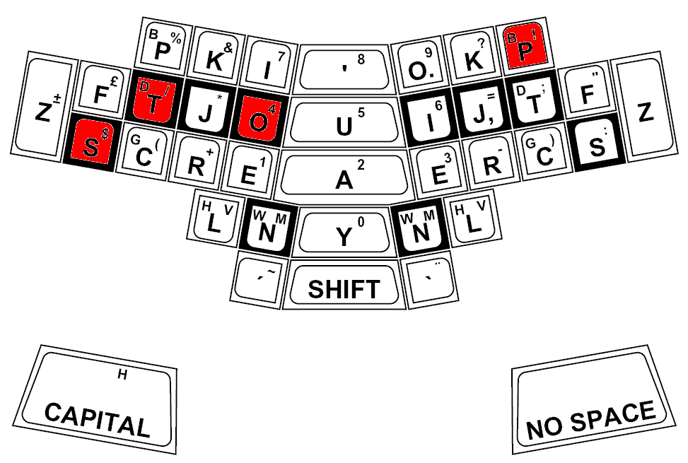

Velotype Synthetic Keyboard
A two-handed keyboard where every stroke is a whole syllable — press several keys with both hands and the machine spells the sound

Overview
The Velotype is a two-handed chorded keyboard that types whole syllables per stroke rather than single letters. Developed in the Netherlands, in production from 1982 with the electronic market model by 1985, it descends from Marius den Outer's 1933 Tachotype and 1939 Velotype shorthand machines. In contrast to QWERTY's one-key/one-letter mapping, the Velotype requires the typist to press several keys simultaneously in each hand; each chord encodes a syllable or morpheme, and the machine's orthographic rules expand the chord into spelled text. Because it produces spelled syllables rather than an intermediate shorthand transcription, it is orthographic rather than phonetic.
The keyboard's physical layout is its strangest feature. Keys are arranged in an asymmetric, splayed ('butterfly') configuration with three keys per finger offset from the resting position, widely described at the time as ahead of its time ergonomically. Skilled operators reach around 200 words per minute, faster than a fast conventional typist. The Velotype was sold commercially by Tradecom & Velotype, and the Dutch national training institute ran commercial Velotype courses in the late 1980s on CP/M computers running WordStar. A later PC-keyboard adaptation, the Veyboard, appeared in 2001.
Deep dive
Typing on a Velotype is a fundamentally different act from typing on QWERTY. Each chord is struck by pressing several keys with each hand at once — a left-hand key and a right-hand key combine into a syllable. Instead of keying the letters S-T-O-P, the typist presses the specific chord the machine resolves to 'stop'. The human performs a compact motor gesture and the machine does the spelling work — the core inversion of the device.
The butterfly layout, with keys offset from the neutral resting position and three keys per finger, was designed for both speed and long-session comfort. Because the hands stay near home position and every syllable is one chord, both hands are constantly engaged. The result was sustained speeds beyond most professional typists, achieved through a physical grammar unlike QWERTY's.
Unlike many of the museum's one-off prototypes, the Velotype was a genuinely marketable device. Tradecom & Velotype sold it commercially, and the Dutch Rijks-Opleidings-Instituut offered commercial Velotype training on CP/M computers running WordStar in the late 1980s. It is a rare example of a syllable-chording keyboard that crossed from invention to working product and into professional typing courses.
The museum's text-entry family currently runs one key at a time — Microwriter, BAT Keyboard, DataHand, Twiddler all chord single keys or one hand. The Velotype is the only full-syllable chording keyboard: a machine that types words by spelling them from muscular chords. It is the opposite idea from the single-hand micro-chorder — a whole-body, two-handed syllabic instrument of typing.
Media
